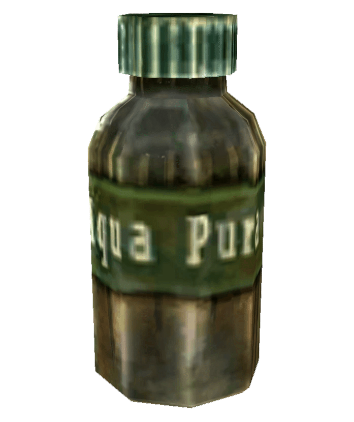
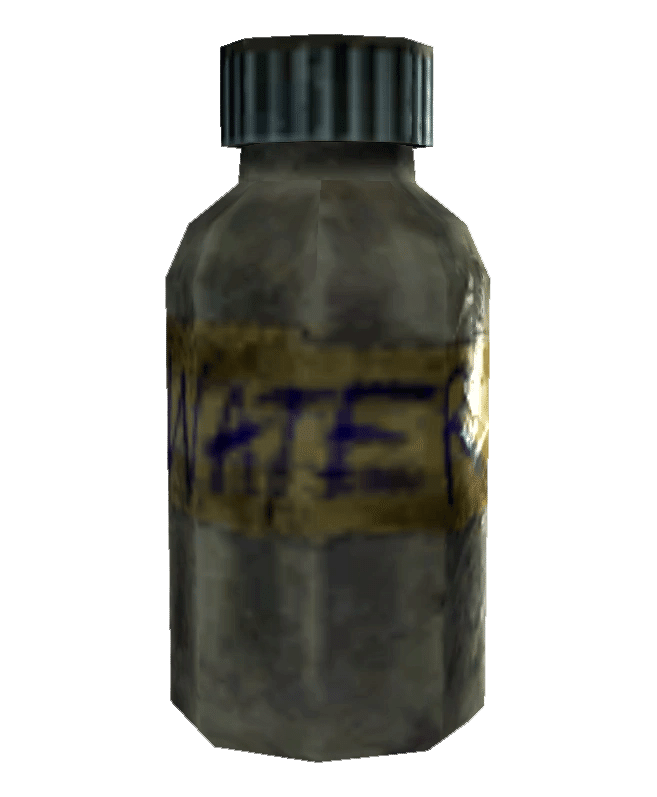
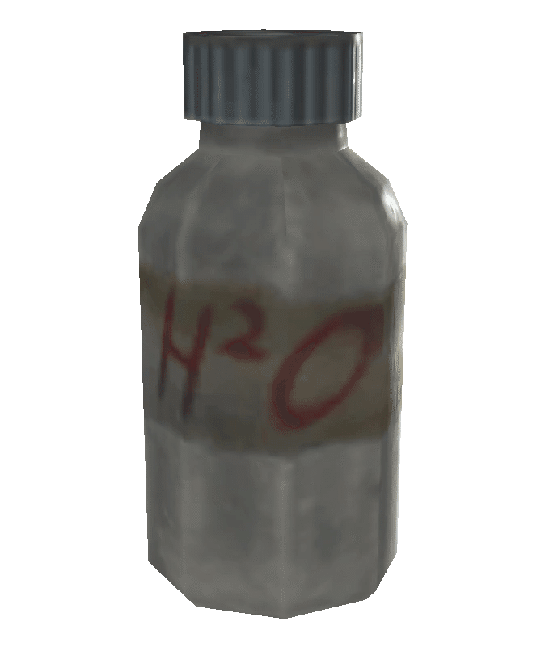
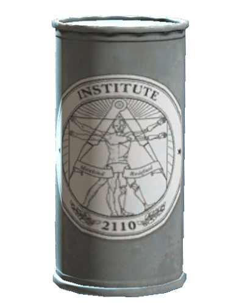
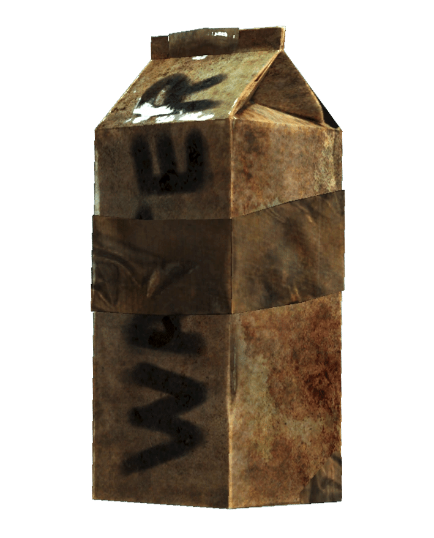

水
汚れた水
概要:
ウェイストランドで最も一般的に見られる水。
汚染された湖、川、水たまりから採取されます。効果:
浄水とは異なり、放射能ダメージを受けます。
これは医師による治療やRadAwayで回復できます。
きれいな水
概要:
放射能が除去され、安全に飲める水です。出現:
モハビや連邦ほどキャピタル・ウェイストランドでは一般的ではありませんが、救急キットやより高度な居住地で見られます。

Aqua Pura（アクア・プーラ）
概要:
Project Purity（プロジェクト・ピュリティ）で浄化された潮汐盆地（Tidal Basin）の水が瓶詰めされたものです。

Aqua Cura（アクア・クーラ）
概要:
グールがよく患う病気の治療薬として、グリフォンがアンダーワールドで販売している、通常の放射能汚染された水をAqua Cura（アクア・クーラ）のボトルに偽装したものです。
グリフォンは本物のAqua Pura（アクア・プーラ）を盗み、他のウェイストランド人に高値で販売しています。
聖水
概要: マザー・キュリー3世によって製造された、Aqua Puraの放射能汚染された変種です。

サボテン水
概要:
『Fallout: New Vegas』のレシピ名であり、運び屋が浄水をクラフトできるようにするものです。クラフト要件:
材料: 空のソーダボトル (1)、ウチワサボテンの実 (2)
要件: キャンプファイヤーまたは電気ホットプレート、サバイバル: 30
生産: 浄水 (1)
放射能汚染された水
概要:
『Fallout: New Vegas』の汚れた水の変種。
より強いレベルの放射線にさらされており、汚れた水の3倍の放射能を摂取者に与えます。
主に高度に放射能汚染された地域で見られます。
Mass purified water（大量浄水）
概要:
『Fallout: New Vegas』のレシピ名であり、運び屋が大量の浄水を生産できるようにするものです。クラフト要件:
材料: 汚れた水 (5)、ガラスピッチャー (2)、手術用チューブ (1)
要件: キャンプファイヤーまたは電気ホットプレート、サバイバル: 50
生産: 大量浄水 (4)（浄水4本分を生産）
ガラスピッチャーと手術用チューブはクラフト後にインベントリに戻り、再利用可能です。
Rushing water（ラッシング・ウォーター）
概要:
『Lonesome Road』でクラフト可能な水の変種で、運び屋の攻撃速度をブーストします。
エネルギーが急増しますが、中毒性はありません。クラフト要件:
材料: Jet (1)、浄水 (1)
要件: キャンプファイヤーまたは電気ホットプレート、サバイバル: 50
生産: Rushing water (1)
薬物入り水
概要:
HalluciGen, Inc.によって鎮静剤が混入された戦前の変種。
被験者の摂取の一部として使用され、効果が現れた後、被験者は検査のために研究員に連れて行かれました。

インスティチュート瓶詰め水
概要:
インスティチュートによって瓶詰めされ、配布される浄水変種。
シンセのカフェテリア従業員から購入できます。

沸騰した水
概要:
『Fallout 76』でクラフト可能な水。
濾過され、火で加熱されています。
汚れた水よりも安全ですが、浄水ほどきれいではなく、依然としてわずかな放射能ダメージを与えます。
多くのお茶、スープ、薬のクラフトに不可欠です。
有毒な水
概要:
『Fallout 76』の高濃度放射能汚染水。
特に汚染された水源（通常、茶色やオレンジ色）から採取できます。
ゲーム内の水変種の中で最も危険であり、沸騰させたり浄化したりすることはできません。
注記
『Fallout 3』および『Fallout: New Vegas』では、湖、川、水たまりなどのたまり水を飲むと、2から30 HPを回復できます。
『Fallout 4』では、そのような水を飲むとHPが回復しますが、プレイヤーキャラクターの放射線レベルも増加します。
Fallout76の残念な所はトイレから水をすすれない事ですね。
他の作品であれば初心者がトイレにインタラクトできるなーと操作するとまさかのすすりだすという行為をする為、注意が必要です。
ウェイストランドでは戦後間もないということもあって綺麗な水はパッケージされた物が沢山手に入りますが、Fallout3では綺麗な水を巡って戦争まで勃発します。
一方モハビではサボテン水とかいう最強の綺麗な水が存在したりと地域によってかなり格差がある水事情でした。
ちなみに調べたんですけど、放射能に汚染されている水を沸騰させたところで勿論放射能が減ったり現実ではしないので、76プレイヤー達の技術力はヤバいです。
This article was created by translating and editing Water from Nukapedia: The Fallout Wiki.
Licensed under the Creative Commons Attribution-Share Alike License (CC BY-SA 3.0).
コミュニティ維持のため、寄付を受け付けております。
This article was created by translating and editing Water from Nukapedia: The Fallout Wiki.
Licensed under the Creative Commons Attribution-Share Alike License (CC BY-SA 3.0).
© Overseer Mohi's Terminal — Fallout Lore Archive
> COMMENTS